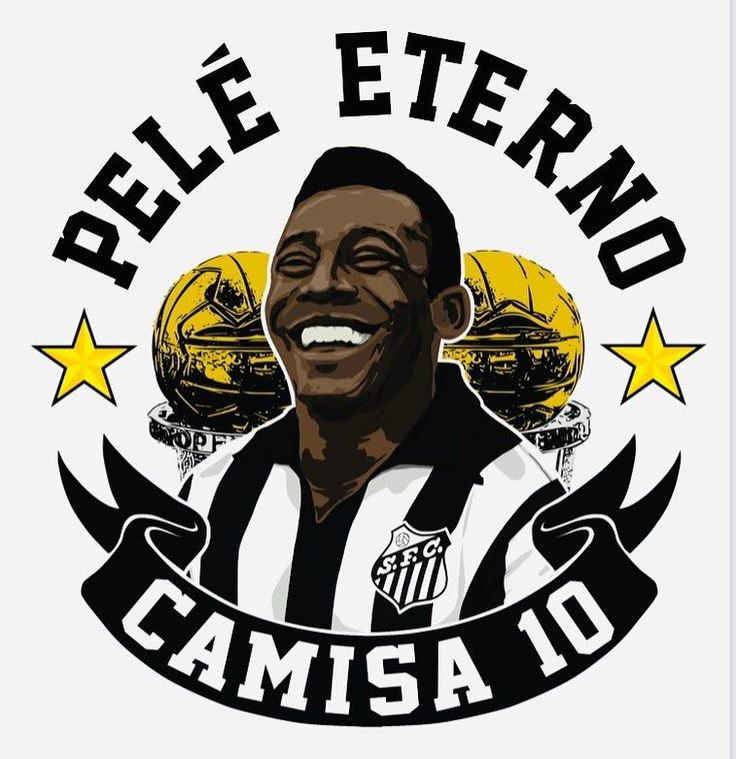
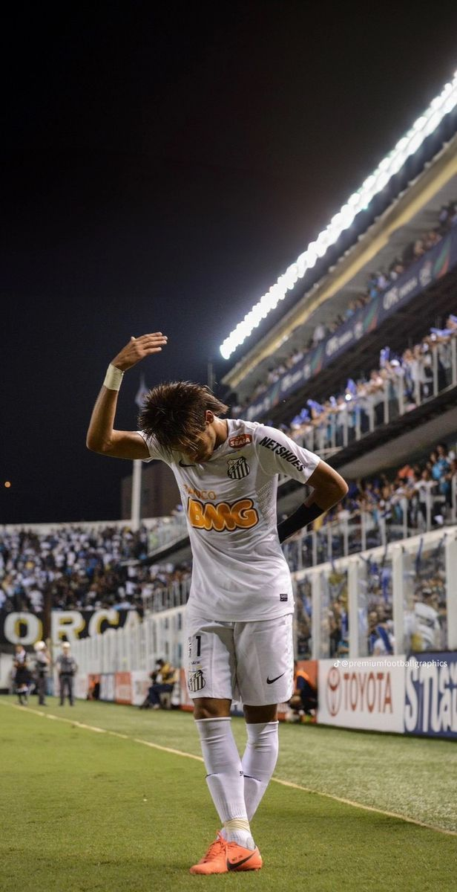

-
Famoso escudo do Santos

O Santos Futebol Clube, conhecido simplesmente como Santos, é um dos clubes mais icônicos e tradicionais do Brasil e do mundo. Fundado em 14 de abril de 1912, na cidade de Santos, o clube tem uma história rica e recheada de conquistas.
-
Pelé, o rei do futebol
Pelé, considerado o maior jogador de futebol de todos os tempos, liderou o Santos em uma de suas fases mais gloriosas.
-
Hino do Santos

"Nascer, viver e no Santos morrer. É um orgulho que nem todos podem ter."
-
Neymar, o príncipe da vila
Neymar Jr. brilhou no Santos entre 2009 e 2013, conquistando títulos importantes e marcando gols históricos.
-
Santos campeão da Libertadores 2011

A conquista da Libertadores de 2011 marcou o terceiro título do clube no torneio.